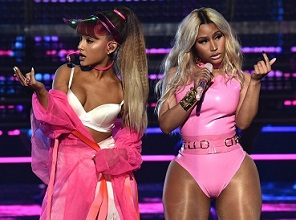
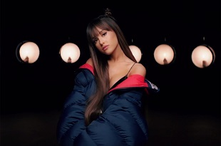

|

|
Dangerous Woman es el tercer álbum de estudio de
la cantante estadounidense Ariana Grande, lanzado el 20 de mayo de 2016 a través del sello discográfico
Republic Records.
Cuenta con las colaboraciones de
Nicki Minaj, Lil Wayne, Macy Gray
y
Future.
El álbum fue originalmente nombrado "Moonlight", y tenía la canción «Focus», como el destinado primer sencillo, se decidió
cambiar el nombre del álbum para Dangerous Woman y destinar la pista homónima como primer sencillo.
(Para más información dirigirse a 2016-2017 Tercer álbum de estudio: Dangerous Woman).
Dangerous Woman representa una etapa más madura de la cantante, con sonidos
pop, dance-pop, synth-pop y
R&B, con influencias de
jazz, reggae, house
dream-pop. Grande trabajó con los compositores y productores
Max Martin, Savan Kotecha, Tommy Brown, Ilya Salmanzadeh, Johan Carlsson, Peter Svensson, Steven Franks, Billboard y
Twice as Nice.
El álbum debutó en el número dos en los
EE.UU. Billboard 200, ganando 246.000 unidades álbum equivalente en su primera semana, con 129.000 procedentes de las
ventas de puros. En el
Reino Unido,el álbum debutó en el primer puesto, convirtiéndose en su primer número uno en el país.
|
|
El primer sencillo
Dangerous Woman fue lanzado el 11 de marzo, el año 2016 y alcanzó el puesto número ocho en los
EE.UU. Billboard Hot 100. el segundo sencillo,
Into You, fue lanzado el 6 de mayo de 2016, y desde entonces se ha alcanzado el número 13 en la tabla.
Dos sencillos promocionales fueron liberados para el álbum,
Be Alright y
Let Me Love You (con el rapero
Lil Wayne); trazaron en los números 42 y 98 en el Billboard
Hot 100, respectivamente.
The Dangerous Woman Tour es la tercera gira musical de la cantante estadounidense, realizada para promover su tercer
álbum de estudio,
Dangerous Woman (2016). La gira se inició el 3 de febrero de 2017 en
Phoenix/Estados Unidos y finalizará el 21 de septiembre de 2017 en
Chek Lap Kok/Hong Kong. Hasta el momento, Grande ha anunciado 81 fechas divididas en
América del Norte, Europa, Latinoamérica, Oceanía y
Asia de las cuales 7 de ellas fueron canceladas en Europa.
La empresa encargada de la promoción de la gira es
Live Nation.
|

|